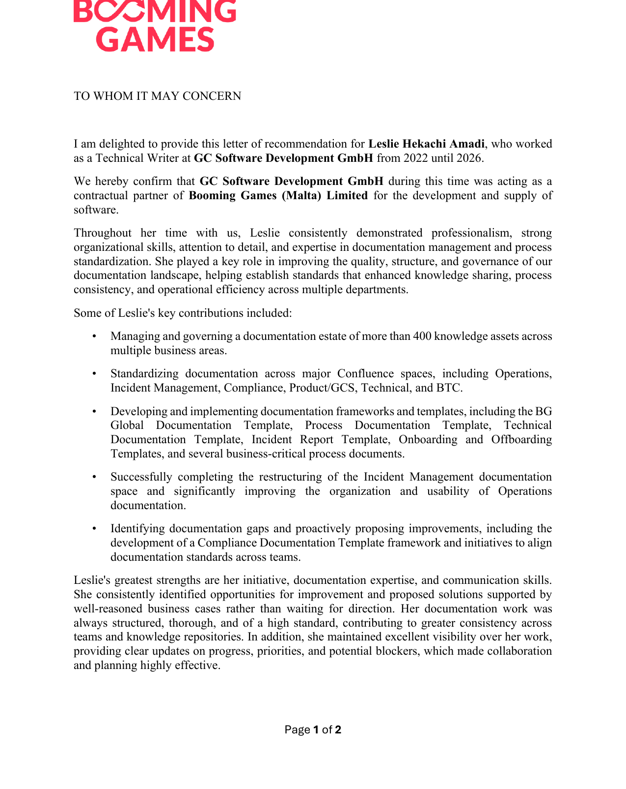
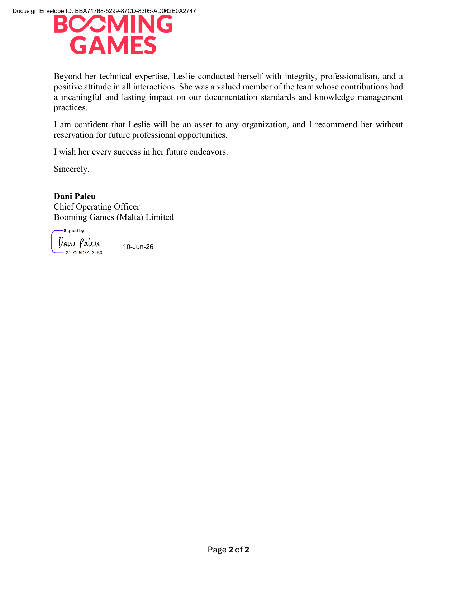

Leslie Amadi
Senior Technical Writer
Documentation Governance · Knowledge Management · Process Standardisation
Hamburg, Germany · hello@lesliewrites.tech · +49 151 57618141
Professional Summary
Senior Technical Writer with 5+ years of experience leading documentation governance, knowledge management, and process standardisation. Owned documentation standards, reviews, and content governance for 400+ knowledge assets across 7 departments as the organisation's sole Technical Writer. Experienced across AI/ML, API, MLOps, incident management, and operational workflows, with demonstrated ownership of business-critical documentation systems in highly regulated iGaming environments.
Core Competencies
See each competency demonstrated in the documentation portfolio, organised by discipline.
Professional Experience
Senior Technical Writer & Documentation Governance
Oct 2022 – Jun 2026GC Software Development GmbH · Hamburg, Germany
Sole Technical Writer; contractual partner to Booming Games (Malta) Ltd.
Documentation Governance & Standards
- Owned documentation governance across 7 departments as the primary author, reviewer, and approver for 400+ knowledge assets, establishing organisation-wide standards, review cycles, and content-ownership practices.
- Designed and implemented the BG Global Documentation Template framework plus Process, Technical, Incident Report, Onboarding/Offboarding, and Compliance templates standardising structure and quality across the Operations, Incident Management, Compliance, Product/GCS, Technical, and BTC spaces.
- Conducted recurring documentation audits and gap analyses across business functions; documentation subsequently passed internal and partner audits with no major findings.
- Used search-gap and support signals frequent questions, unfindable topics to prioritise which knowledge assets to improve, raising findability and self-service.
Process Documentation & Onboarding
- Documented and maintained 40+ end-to-end processes and 100+ supporting workflows, creating auditable sources of truth that reduced reliance on undocumented tribal knowledge.
- Developed organisation-wide and third-party integration onboarding frameworks repeatable knowledge-transfer models still in use, noticeably shortening new-hire and partner ramp-up time.
- Produced process maps, swimlanes, and workflow models adopted as the primary reference for business-critical operations.
- Completed the restructuring of the Incident Management documentation space and reorganised Operations documentation, measurably improving structure and usability.
Incident Management & Compliance
- Created incident response procedures, escalation workflows, and playbooks; maintained Jira workflow and change-management records used during live incidents.
- Documented billing, reconciliation, and exception-handling with Finance and Compliance to meet audit and internal-control expectations.
Technical Writer
Jan 2021 – Sep 2022Betinvest · Remote
- Produced technical documentation, release notes, and user-facing content with engineers, QA, and product managers.
- Maintained knowledge repositories, improving content organisation and discoverability; supported coordinated release cycles.
Selected Portfolio Work
Original demonstration pieces full portfolio at lesliewrites.tech/portfolio, organised by discipline.
- Documentation Architecture: information architecture, ownership model, content lifecycle, and governance for 400+ assets.
- Incident Response & Jira Workflow: post-incident analysis with 5-Whys RCA and governed, multi-team ticket workflows.
- Patient Outcomes Datasheet: data governance de-identification, intended-use limits, and prescribed fairness checks.
- API references (Aperture Pay, Helix Play, Stride): signed requests, idempotency, webhooks, and failure recovery across payments, iGaming, and SaaS.
- Helios & Atlas (MLOps / API): model-serving architecture, runbooks, RACI, and Stripe-style developer-experience references.
Tools & Technical Skills
- Documentation & KM: Confluence, Docusaurus, DITA XML, Oxygen XML Editor, Postman, knowledge-base platforms, information architecture, template frameworks, content governance.
- Docs-as-code & version control: Git, GitHub, GitLab, VS Code, Markdown, static-site publishing.
- Process & Product: Jira, Draw.io, Miro, Figma, process mapping & swimlanes, user stories, journey mapping.
- Technical domains: MLOps & model serving, API documentation, incident response, SEO & content systems.
- Productivity: Microsoft Office, Google Workspace, HTML/CSS.
Education & Certifications
- [Degree / Field] [Sumy State University Ukraine], [2015]
- Certifications: [Google certifications], [2022]
Letter of Recommendation


Signed letter from the Chief Operating Officer, Booming Games (Malta) Limited. Full text below.
I am delighted to provide this letter of recommendation for Leslie Hekachi Amadi, who worked as a Technical Writer at GC Software Development GmbH from 2022 until 2026.
We hereby confirm that GC Software Development GmbH during this time was acting as a contractual partner of Booming Games (Malta) Limited for the development and supply of software.
Throughout her time with us, Leslie consistently demonstrated professionalism, strong organizational skills, attention to detail, and expertise in documentation management and process standardization. She played a key role in improving the quality, structure, and governance of our documentation landscape, helping establish standards that enhanced knowledge sharing, process consistency, and operational efficiency across multiple departments.
Some of Leslie's key contributions included:
- Managing and governing a documentation estate of more than 400 knowledge assets across multiple business areas.
- Standardizing documentation across major Confluence spaces, including Operations, Incident Management, Compliance, Product/GCS, Technical, and BTC.
- Developing and implementing documentation frameworks and templates, including the BG Global Documentation Template, Process Documentation Template, Technical Documentation Template, Incident Report Template, Onboarding and Offboarding Templates, and several business-critical process documents.
- Successfully completing the restructuring of the Incident Management documentation space and significantly improving the organization and usability of Operations documentation.
- Identifying documentation gaps and proactively proposing improvements, including the development of a Compliance Documentation Template framework and initiatives to align documentation standards across teams.
Leslie's greatest strengths are her initiative, documentation expertise, and communication skills. She consistently identified opportunities for improvement and proposed solutions supported by well-reasoned business cases rather than waiting for direction. Her documentation work was always structured, thorough, and of a high standard, contributing to greater consistency across teams and knowledge repositories. In addition, she maintained excellent visibility over her work, providing clear updates on progress, priorities, and potential blockers, which made collaboration and planning highly effective.
Beyond her technical expertise, Leslie conducted herself with integrity, professionalism, and a positive attitude in all interactions. She was a valued member of the team whose contributions had a meaningful and lasting impact on our documentation standards and knowledge management practices.
I am confident that Leslie will be an asset to any organization, and I recommend her without reservation for future professional opportunities. I wish her every success in her future endeavors.
Sincerely,
Dani Paleu
Chief Operating Officer
Booming Games (Malta) Limited
A signed PDF copy of this letter is available on request.